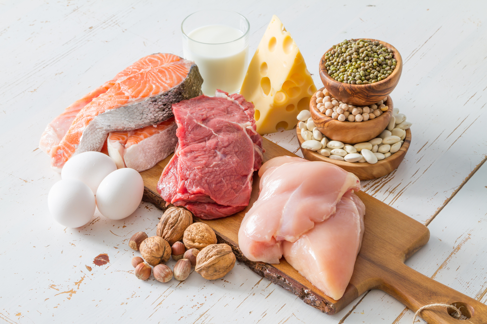
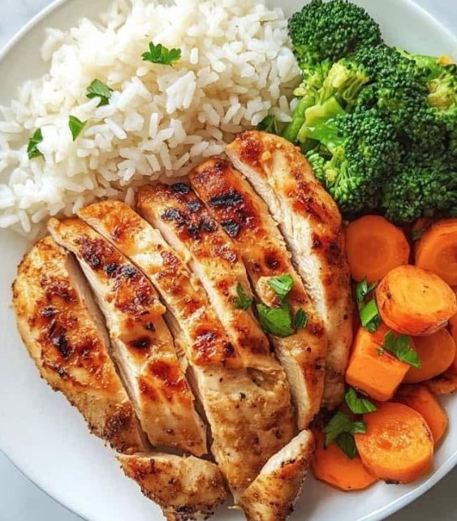
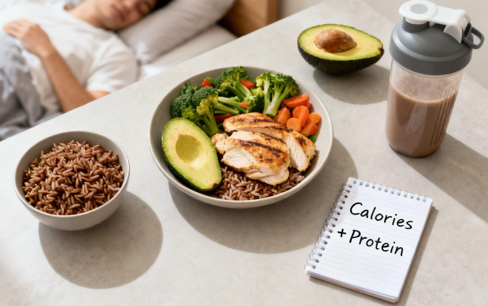

1. A importância da alimentação
Uma alimentação equilibrada fornece a energia
e os nutrientes necessários para realizar
atividades físicas, manter a saúde e contribuir
para a recuperação muscular.
2. Principais macronutrientes
Proteínas
As proteínas são essenciais para a construção
e manutenção dos músculos, além de participarem
de diversas funções do organismo.

Principais fontes de proteína:
- Frango e outras carnes.
- Peixes, como sardinha e atum.
- Ovos.
- Leite, queijo e iogurte.
- Feijão, lentilha e grão-de-bico.
Carboidratos
Os carboidratos são uma das principais fontes
de energia do corpo e ajudam a fornecer
combustível para os treinos e outras atividades.
Principais fontes de carboidratos:
- Arroz e macarrão.
- Batata inglesa e batata-doce.
- Mandioca e inhame.
- Aveia e pães.
- Frutas, como banana e maçã.
Gorduras
As gorduras também são importantes para o
funcionamento do organismo, participando da
produção hormonal e da absorção de vitaminas.
Fontes de gorduras:
- Abacate.
- Azeite de oliva.
- Castanhas e amendoim.
- Sementes.
3. Alimentação de acordo com o objetivo
Emagrecimento
Para reduzir a gordura corporal, geralmente é
necessário consumir menos calorias do que o
organismo gasta. Esse processo é conhecido
como déficit calórico.
É importante manter uma alimentação equilibrada,
com proteínas, fibras, frutas e vegetais,
evitando restrições exageradas.
Ganho de massa muscular
Para ganhar massa muscular, o corpo precisa
de proteínas, energia e nutrientes suficientes.
Dependendo da situação, pode ser necessário
um pequeno superávit calórico, combinado
com treinamento adequado.

4. Como sentir saciedade consumindo menos calorias
A saciedade é a sensação de estar satisfeito
após uma refeição. Algumas estratégias ajudam
a controlar a fome sem precisar consumir
grandes quantidades de calorias.
- Consumir alimentos ricos em fibras, como frutas, verduras, legumes e aveia.
- Incluir fontes de proteína nas refeições, como ovos, frango e feijão.
- Dar preferência a alimentos com maior volume e menor densidade calórica, como verduras e legumes.
- Beber água regularmente ao longo do dia.
- Comer devagar e prestar atenção aos sinais de fome e saciedade.
5. Hidratação
A água é fundamental para regular a temperatura
corporal, transportar nutrientes e manter
o funcionamento adequado dos músculos.
Durante os exercícios, a necessidade de água
pode aumentar, principalmente em ambientes
quentes ou em atividades prolongadas.
6. A importância do descanso

O descanso é um dos principais fatores para
a recuperação do organismo após os treinos.
Durante o sono, ocorrem processos importantes
para a recuperação muscular e o equilíbrio corporal.
- Manter uma rotina regular de sono.
- Evitar treinar intensamente sem recuperação.
- Respeitar os dias de descanso.
- Evitar o excesso de exercícios.
7. Dicas importantes
- Mantenha uma alimentação variada e equilibrada.
- Evite dietas extremamente restritivas.
- Consuma proteínas e fibras diariamente.
- Mantenha uma boa hidratação.
- Priorize o sono e a recuperação.
Conclusão: uma boa alimentação
e um descanso adequado, aliados ao treinamento,
ajudam a alcançar resultados de forma saudável
e sustentável.
Para uma dieta individualizada, procure a orientação de um nutricionista.